# you may need to run: install.packages(c("dplyr","ggplot2","lme4"","MuMIn", "lmerTest", "patchwork"))
library(ggplot2) # for plotting
library(lme4) # linear mixed effects models (LMER)
library(lmerTest) # for lmer p-values
library(MuMIn) # lmer Rsq
library(patchwork) # for combining plots
okabe_ito <- c(
"orange" = "#E69F00",
"sky_blue" = "#56B4E9",
"green"= "#009E73",
"yellow"= "#F0E442",
"blue"= "#0072B2",
"red"= "#D55E00",
"pink"= "#CC79A7",
"black"= "#111111"
)
PLOTS_DIR <- "part2_figures"
dir.create(PLOTS_DIR, showWarnings = FALSE, recursive = TRUE)An introduction to linear mixed effects models in chronobiology: Part 2
Load in Packages, and Setup
The data:
df <- read.csv("data.csv", header = TRUE, sep = ",")
# -- preprocessing --
# restrict to daytime window (drop values before 5am)
df <- df[df$pa_daybefore_maxbout_time >= 5,]
head(df) subject_id age sex
1 93c59fc4993620e0c004fb5e44555f4145c2a1a3b50bc1d234e67ab9e358bef7 35 Female
2 93c59fc4993620e0c004fb5e44555f4145c2a1a3b50bc1d234e67ab9e358bef7 35 Female
3 93c59fc4993620e0c004fb5e44555f4145c2a1a3b50bc1d234e67ab9e358bef7 35 Female
4 93c59fc4993620e0c004fb5e44555f4145c2a1a3b50bc1d234e67ab9e358bef7 35 Female
5 93c59fc4993620e0c004fb5e44555f4145c2a1a3b50bc1d234e67ab9e358bef7 35 Female
6 93c59fc4993620e0c004fb5e44555f4145c2a1a3b50bc1d234e67ab9e358bef7 35 Female
date hr_acrophase pa_daybefore_maxbout_time pa_daybefore_maxbout_time_trait
1 3 13.7500 11.9500 11.0278
2 4 14.5000 9.8333 11.0278
3 5 14.7500 9.0833 11.0278
4 6 14.0833 14.3833 11.0278
5 7 13.7500 11.9167 11.0278
6 8 13.6667 10.2167 11.0278
pa_daybefore_maxbout_time_state
1 0.9222
2 -1.1945
3 -1.9445
4 3.3555
5 0.8889
6 -0.8111This data contains: an anonymised identifer column subject_id, age and sex, a day identifier date, acrophase (peak time) of a diurnal rhythm extracted from wearable smartwatch heart rate (HR) data hr_acrophase, and the time at which the most physically active period (‘bout’) of the previous day (date-1) began (pa_daybefore_maxbout_time).
The latter two variables are normalised 24-hour time-of-day variables. For example, 14.5 corresponds to 2:30pm. The variables pa_daybefore_maxbout_time_trait and pa_daybefore_maxbout_time_state can be ignored for now.
This data was derived from a wearable study of healthy volunteers under free-living (outside of the lab) conditions over 2-4 weeks. For more details, see README.md. There are 104 different subjects represented in this table. With this data, we’ll ask: “How does when we are most physically active affect our next-day heart rate rhythm timing?”.
Firstly, what does the relationship between pa_daybefore_maxbout_time and hr_acrophase look like?
# -- initial plot --
raw_plot <- ggplot(df, aes(x=pa_daybefore_maxbout_time, y=hr_acrophase))+
geom_point(color="grey") # scatter points
show(raw_plot)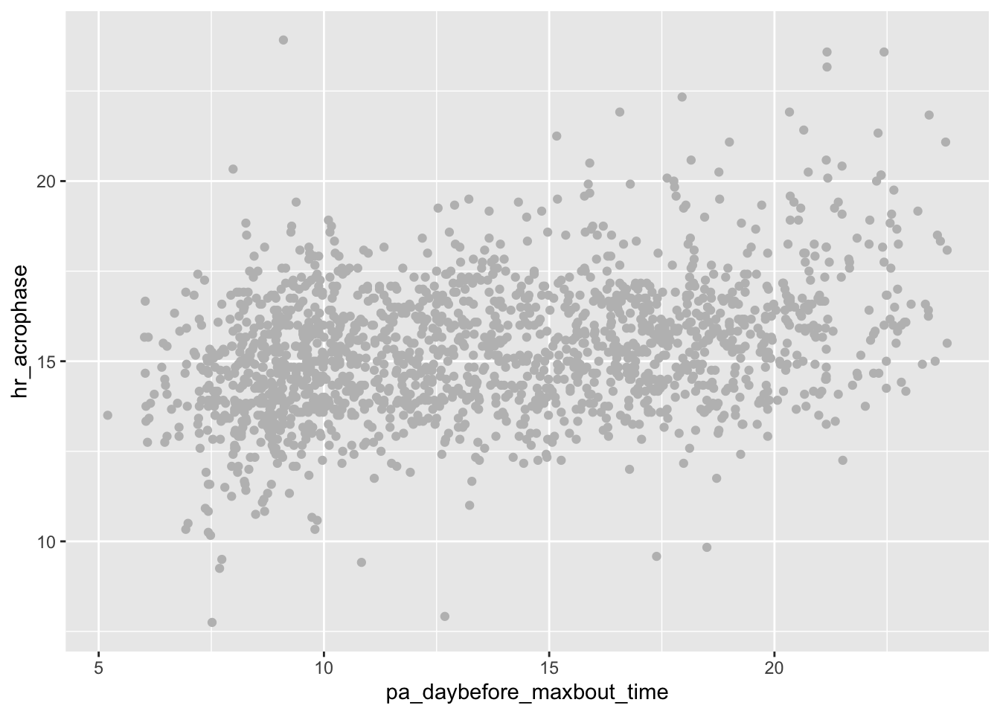
ggsave(paste0(PLOTS_DIR, '/', "unstandardised", ".pdf"))Saving 7 x 5 in imageThere looks to be a small-moderate positive correlation: later activity timing seems to delay (make later) our HR rhythm timing the following day. However, people have different activity levels, schedules and exercise timing preferences: there might therefore be differences between people (identified by subject_id), which a LMER is well-suited to account for.
Back to basics: a linear regression model (Model A)
For comparative purposes, let’s ignore the group structure for now and fit a linear model (hr_acrophase ~ pa_daybefore_maxbout_time) to this data.
model_a <- lm(hr_acrophase ~ pa_daybefore_maxbout_time, data=df)
summary(model_a)
Call:
lm(formula = hr_acrophase ~ pa_daybefore_maxbout_time, data = df)
Residuals:
Min 1Q Median 3Q Max
-7.2607 -1.1435 -0.1097 1.0935 9.2492
Coefficients:
Estimate Std. Error t value Pr(>|t|)
(Intercept) 13.372676 0.137238 97.44 <2e-16 ***
pa_daybefore_maxbout_time 0.142292 0.009615 14.80 <2e-16 ***
---
Signif. codes: 0 '***' 0.001 '**' 0.01 '*' 0.05 '.' 0.1 ' ' 1
Residual standard error: 1.733 on 1683 degrees of freedom
Multiple R-squared: 0.1151, Adjusted R-squared: 0.1146
F-statistic: 219 on 1 and 1683 DF, p-value: < 2.2e-16model_a_rsq <- summary(model_a)$adj.r.squared
LABEL_X = 14
LABEL_Y = 23
# plot model A
model_a_intercept <- model_a$coefficients[1]
model_a_slope <- model_a$coefficients[2]
model_a_plot <- ggplot(df, aes(x=pa_daybefore_maxbout_time, y=hr_acrophase))+
geom_point(color="grey") + # scatter points
geom_line(aes(y=predict(model_a)), color=okabe_ito["red"]) + # add regression line
annotate("text", x=LABEL_X, y=LABEL_Y,
color=okabe_ito["red"],
label=paste0("Intercept: ", round(model_a_intercept, 2), " Slope: ", round(model_a_slope, 2), " Rsq: ", round(model_a_rsq, 2)))
ggsave(paste0(PLOTS_DIR, '/', "model_a", ".pdf"))Saving 7 x 5 in imageshow(model_a_plot)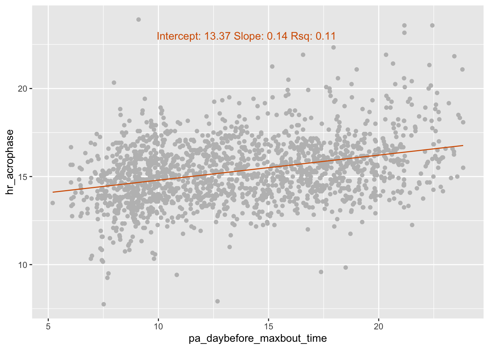
There is indeed a weak positive relationship (slope =0.14). The intercept here is 13.37, or 1:22pm. The model fit is weak at Rsq=0.11.
But we know this data represents 104 different subjects, what do they look like? Let’s pick two of these subjects - one with an earlier than average HR acrophase, and one with a later than average HR acrophase.
# visualise different subjects
subject_early ="e4f1d0e8bbc181058f47bdd8d21e88308ffffb722e8a2de203216c76495c2711"
subject_late = "eb03c5e0216ea3832449586327e1754b361f89e0f89435ee452024d1d798bf3c"
model_a_plot_2subj <- model_a_plot +
geom_point(data=df[df$subject_id==subject_early,], color=okabe_ito["blue"], size=2) +
geom_point(data=df[df$subject_id==subject_late,], color=okabe_ito["orange"],size=2)
ggsave(paste0(PLOTS_DIR, '/', "model_a_2subj", ".pdf"))Saving 7 x 5 in imageshow(model_a_plot_2subj)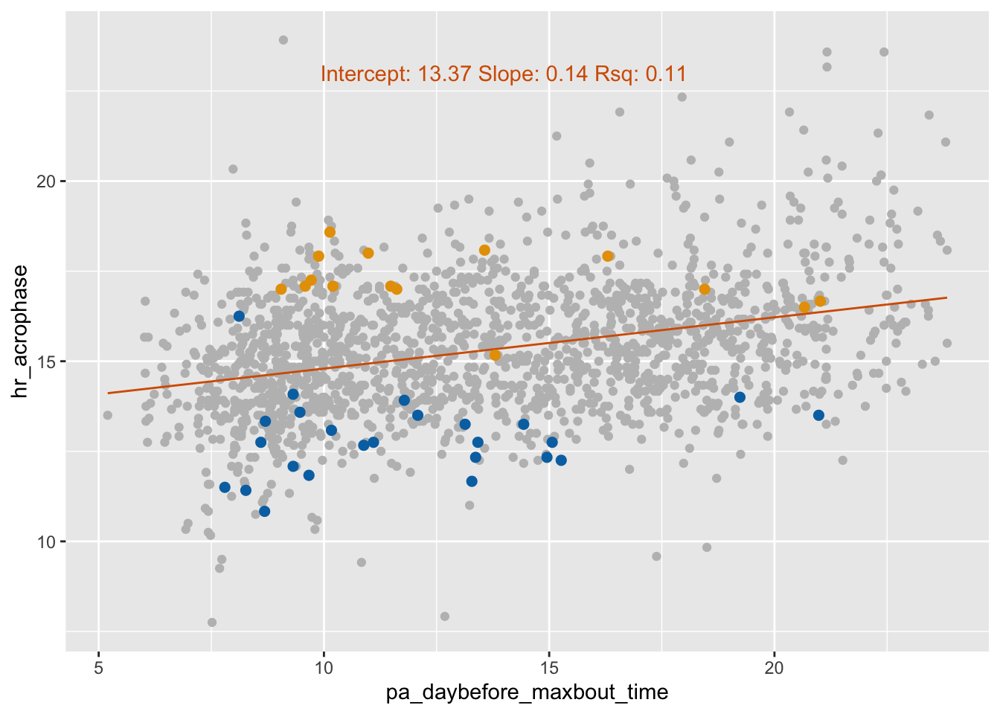
For the earlier subject (blue), it looks like their data follows a similar trend of a weak positive correlation. However, for the later subject (orange), there appears to be a weak negative correlation. These between-subject differences in average acrophase and activity-acrophase trend are probably contributing to the poor model fit. With this group structure, an LMER would be a better option.
Subject-level intercept using LMERs (Model B)
model_b <- lmer(hr_acrophase ~ pa_daybefore_maxbout_time + (1|subject_id), data=df)Here, we’ve added a subject-level random intercept, by switching to lmer() and adding a (1|subject_id) term to the formula.
model_b_summary <- summary(model_b)
show(model_b_summary)Linear mixed model fit by REML. t-tests use Satterthwaite's method [
lmerModLmerTest]
Formula: hr_acrophase ~ pa_daybefore_maxbout_time + (1 | subject_id)
Data: df
REML criterion at convergence: 5098.7
Scaled residuals:
Min 1Q Median 3Q Max
-4.1255 -0.5223 -0.0373 0.5117 4.3345
Random effects:
Groups Name Variance Std.Dev.
subject_id (Intercept) 3.2481 1.802
Residual 0.9468 0.973
Number of obs: 1685, groups: subject_id, 104
Fixed effects:
Estimate Std. Error df t value Pr(>|t|)
(Intercept) 1.480e+01 1.977e-01 1.413e+02 74.825 < 2e-16 ***
pa_daybefore_maxbout_time 4.312e-02 6.032e-03 1.589e+03 7.148 1.34e-12 ***
---
Signif. codes: 0 '***' 0.001 '**' 0.01 '*' 0.05 '.' 0.1 ' ' 1
Correlation of Fixed Effects:
(Intr)
p_dybfr_mx_ -0.420model_b_intercept <- model_b_summary[["coefficients"]][1, 1]
model_b_slope <- model_b_summary[["coefficients"]][2, 1]
model_b_rsq <- r.squaredGLMM(model_b)[2]
print(paste0("Intercept: ", round(model_b_intercept, 5), " Slope: ", round(model_b_slope, 5), " Rsq: ", round(model_b_rsq, 5)))[1] "Intercept: 14.79523 Slope: 0.04311 Rsq: 0.7762"We get an updated estimate of the common cohort-level intercept (14.79, or 2:47pm), which takes into account the distribution of the individual subject intercepts. The common slope is even weaker at 0.04, however we have seen already that there is likely some variation in slope across the cohort. But crucially, the model fit is greatly improved, at Rsq=0.78 - much more variation in the data is now accounted for.
(A technical note: this is a specific type of R2 called ‘conditional R2’, that takes into account the variance explained by both the model fixed and random effects. We could also look at ‘marginal R2’ using r.squaredGLMM(model_b)[1], which considers only fixed effects - you should typically report both.)
Looking at the random effects table, we see that the standard deviation of the intercept (1.802) is double the standard deviation of the residual (0.973), telling us we have more between-subject variability than within-subject.
OK, what do these subject-level intercepts look like?
# plot with per-subject intercepts
model_b_plot <- ggplot(df, aes(x=pa_daybefore_maxbout_time, y=hr_acrophase, colour=subject_id))+
geom_point() +
# add subject level regression lines
geom_line(aes(y=predict(model_b)), alpha=0.5) +
# add group-level regression line
geom_abline(intercept=model_b_intercept, slope=model_b_slope, linewidth=1, color=okabe_ito["red"]) +
annotate("text", x=LABEL_X, y=LABEL_Y,
color=okabe_ito["red"],
label=paste0("Cohort intercept: ", round(model_b_intercept, 2),
" Cohort slope: ", round(model_b_slope, 2),
" Rsq: ", round(model_b_rsq, 2))) +
# remove the legend
theme(legend.position="none")
ggsave(paste0(PLOTS_DIR, '/', "model_b_overall", ".pdf"))Saving 7 x 5 in imageshow(model_b_plot)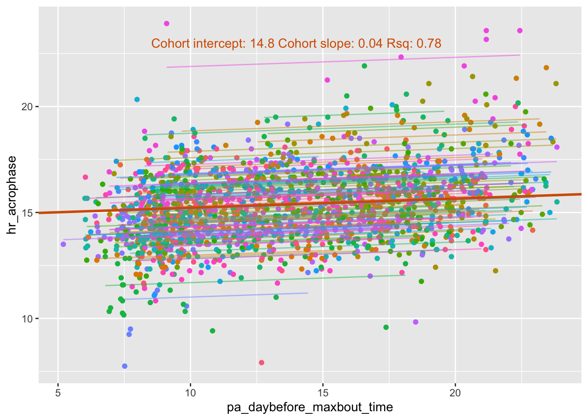
Wow - with 104 subjects, this is quite difficult to pick apart. Let’s focus on our two example subjects from before.
# highlight two subjects from before
df$model_b_predict <- predict(model_b)
# get individual intercept for each subject
model_b_coefs <- coef(model_b)$subject_id
model_b_subj_early_intercept <- model_b_coefs[subject_early, "(Intercept)"]
model_b_subj_late_intercept <- model_b_coefs[subject_late, "(Intercept)"]
model_b_plot_2subj <- ggplot(df, aes(x=pa_daybefore_maxbout_time, y=hr_acrophase))+
geom_point(color="grey") +
geom_point(data=df[df$subject_id==subject_early,], color=okabe_ito["blue"], size=2) +
geom_line(data=df[df$subject_id==subject_early,], aes(y=model_b_predict), color=okabe_ito["blue"]) +
annotate("text", x=LABEL_X, y=model_b_subj_early_intercept-2,
color=okabe_ito["blue"],
label=paste0("Subject intercept: ", round(model_b_subj_early_intercept, 2))) +
geom_point(data=df[df$subject_id==subject_late,], color=okabe_ito["orange"], size=2) +
geom_line(data=df[df$subject_id==subject_late,], aes(y=model_b_predict), color=okabe_ito["orange"]) +
annotate("text", x=LABEL_X, y=model_b_subj_late_intercept+4,
color=okabe_ito["orange"],
label=paste0("Subject intercept: ", round(model_b_subj_late_intercept, 2))) +
# add group-level regression line
geom_abline(intercept=model_b_intercept, slope=model_b_slope, linewidth=1, color=okabe_ito["red"]) +
annotate("text", x=LABEL_X, y=LABEL_Y,
color=okabe_ito["red"],
label=paste0("Cohort intercept: ", round(model_b_intercept, 2),
" Cohort slope: ", round(model_b_slope, 2),
" Rsq: ", round(model_b_rsq, 2)))
ggsave(paste0(PLOTS_DIR, '/', "model_b_2subj", ".pdf"))Saving 7 x 5 in imageshow(model_b_plot_2subj)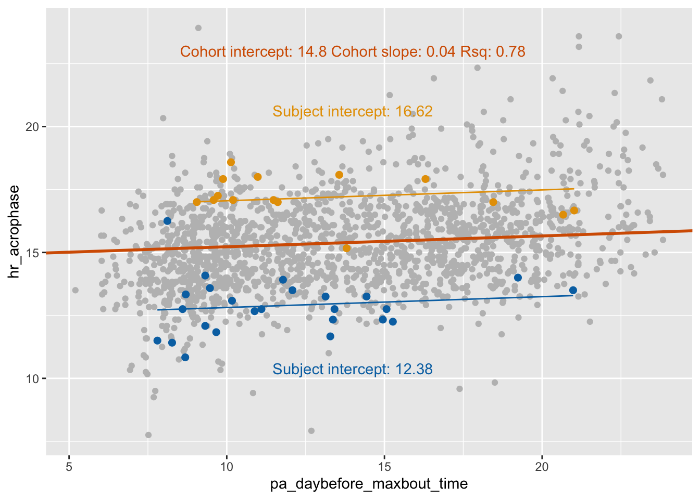
For the earlier subject, their individual fit looks good. For the later subject, their fit isn’t terrible, but it does look like a flatter slope would be more suitable.
Subject-level intercepts and slopes using LMERs (Model C)
With LMERs, we can also allow individual subject slopes to vary from the overall cohort estimate. Let’s see what that looks like in terms of the model formula:
# -- model c: introduce subject random slope --
model_c <- lmer(hr_acrophase ~ pa_daybefore_maxbout_time + (1 + pa_daybefore_maxbout_time|subject_id), data=df)Here, we’ve changed the term “(1|subject_id)” to “(1 + pa_daybefore_maxbout_time|subject_id)”, to specify that both the intercept (represented by 1) and the slope for pa_daybefore_maxbout_time are allowed to vary by subject_id.
model_c_summary <- summary(model_c)
show(model_c_summary)Linear mixed model fit by REML. t-tests use Satterthwaite's method [
lmerModLmerTest]
Formula:
hr_acrophase ~ pa_daybefore_maxbout_time + (1 + pa_daybefore_maxbout_time |
subject_id)
Data: df
REML criterion at convergence: 5084.2
Scaled residuals:
Min 1Q Median 3Q Max
-4.4426 -0.5245 -0.0436 0.5111 4.3837
Random effects:
Groups Name Variance Std.Dev. Corr
subject_id (Intercept) 2.92559 1.7104
pa_daybefore_maxbout_time 0.00252 0.0502 -0.10
Residual 0.91200 0.9550
Number of obs: 1685, groups: subject_id, 104
Fixed effects:
Estimate Std. Error df t value Pr(>|t|)
(Intercept) 14.752964 0.191700 79.722530 76.959 < 2e-16 ***
pa_daybefore_maxbout_time 0.044703 0.008065 65.031696 5.543 5.81e-07 ***
---
Signif. codes: 0 '***' 0.001 '**' 0.01 '*' 0.05 '.' 0.1 ' ' 1
Correlation of Fixed Effects:
(Intr)
p_dybfr_mx_ -0.415model_c_intercept <- model_c_summary[["coefficients"]][1, 1]
model_c_slope <- model_c_summary[["coefficients"]][2, 1]
model_c_rsq <- r.squaredGLMM(model_c)[2]
print(paste0("Intercept: ", round(model_c_intercept, 5), " Slope: ", round(model_c_slope, 5), " Rsq: ", round(model_c_rsq, 5)))[1] "Intercept: 14.75296 Slope: 0.0447 Rsq: 0.78046"How does this model compare to our random intercepts-only model?
The intercept and slope have mainly stayed the same, and the rsq has marginally improved from 0.7762 to 0.7805. While the model is certainly a better fit, the main gain from adding random slopes is substantially reducing the degrees of freedom (df) for pa_daybefore_maxbout_time.
Let’s visualise this again, for all subjects and for our two selected subjects.
# plot with per-subject intercepts and slopes
model_c_plot <- ggplot(df, aes(x=pa_daybefore_maxbout_time, y=hr_acrophase, colour=subject_id))+
geom_point() +
# add subject level regression lines
geom_line(aes(y=predict(model_c)), alpha=0.5) +
# add group-level regression line
geom_abline(intercept=model_c_intercept, slope=model_c_slope, linewidth=1, color=okabe_ito["red"]) +
annotate("text", x=LABEL_X, y=LABEL_Y,
color=okabe_ito["red"],
label=paste0("Cohort intercept: ", round(model_c_intercept, 2),
" Cohort slope: ", round(model_c_slope, 2),
" Rsq: ", round(model_c_rsq, 2))) +
# remove the legend
theme(legend.position="none")
ggsave(paste0(PLOTS_DIR, '/', "model_c_overall", ".pdf"))Saving 7 x 5 in imageshow(model_c_plot)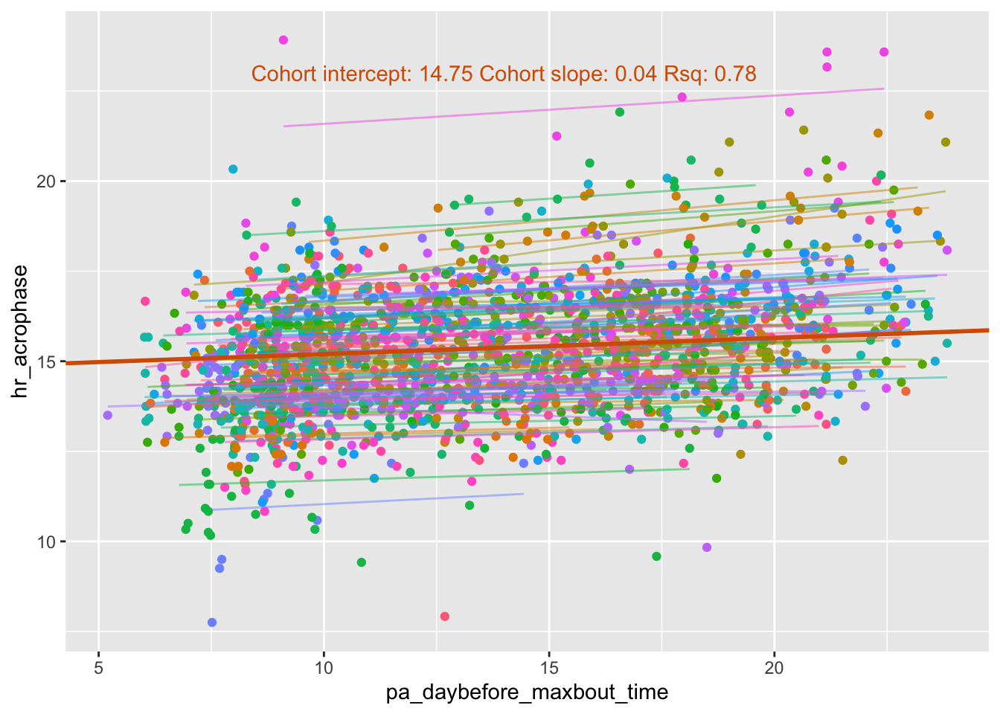
# highlight two subjects from before
df$model_c_predict <- predict(model_c)
# get individual intercept and slope for each subject
model_c_coefs <- coef(model_c)$subject_id
model_c_subj_early_intercept <- model_c_coefs[subject_early, "(Intercept)"]
model_c_subj_early_slope <- model_c_coefs[subject_early, "pa_daybefore_maxbout_time"]
model_c_subj_late_intercept <- model_c_coefs[subject_late, "(Intercept)"]
model_c_subj_late_slope <- model_c_coefs[subject_late, "pa_daybefore_maxbout_time"]
model_c_plot_2subj <- ggplot(df, aes(x=pa_daybefore_maxbout_time, y=hr_acrophase))+
geom_point(color="grey") +
geom_point(data=df[df$subject_id==subject_early,], color=okabe_ito["blue"], size=2) +
geom_line(data=df[df$subject_id==subject_early,], aes(y=model_c_predict), color=okabe_ito["blue"]) +
annotate("text", x=LABEL_X, y=model_c_subj_early_intercept-2,
color=okabe_ito["blue"],
label=paste0("Subject intercept: ", round(model_c_subj_early_intercept, 2), " Subject slope: ", round(model_c_subj_early_slope, 2))) +
geom_point(data=df[df$subject_id==subject_late,], color=okabe_ito["orange"], size=2) +
geom_line(data=df[df$subject_id==subject_late,], aes(y=model_c_predict), color=okabe_ito["orange"]) +
annotate("text", x=LABEL_X, y=model_c_subj_late_intercept+4,
color=okabe_ito["orange"],
label=paste0("Subject intercept: ", round(model_c_subj_late_intercept, 2), " Subject slope: ", round(model_c_subj_late_slope, 2))) +
# add group-level regression line
geom_abline(intercept=model_c_intercept, slope=model_c_slope, linewidth=1, color=okabe_ito["red"]) +
annotate("text", x=LABEL_X, y=LABEL_Y,
color=okabe_ito["red"],
label=paste0("Cohort intercept: ", round(model_c_intercept, 2),
" Cohort slope: ", round(model_c_slope, 2),
" Rsq: ", round(model_c_rsq, 2)))
ggsave(paste0(PLOTS_DIR, '/', "model_c_2subj", ".pdf"))Saving 7 x 5 in imageshow(model_c_plot_2subj)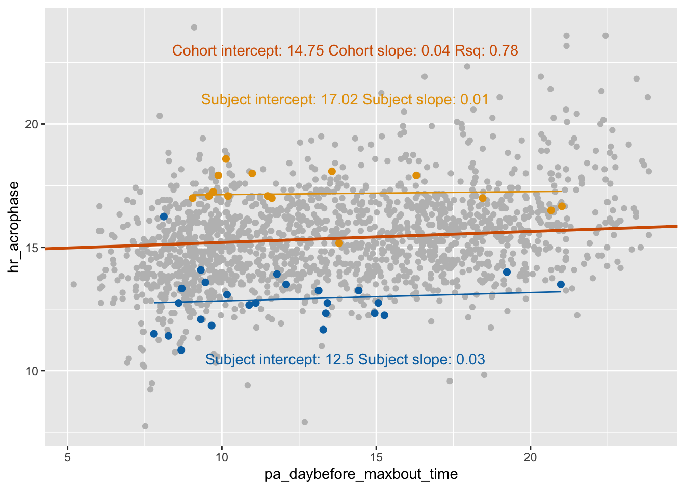
We see that the model is able to fit a slightly flatter slope (0.01) for the later subject, which fits their data better. However, it is not negative as we might have expected from eyeballing the data. This is an example of the ‘partial pooling’ mentioned in Part 1 - because the trend for this subject would differ from most others, and the sample size for this specific subject is quite low, the model borrows from the overall cohort fit, and adjusts their trend accordingly.
Conversely, the slope of the earlier subject (0.03) doesn’t require much adjustment from the overall cohort slope of 0.04. To bring this back to our original aim: the next-day heart rate acrophase is delayed as activity occurs later, with some variation between subjects.
What is the distribution of these slopes across all subjects?
# but what do slopes look like overall?
model_c_slopes_mean <- mean(model_c_coefs$pa_daybefore_maxbout_time)
ggplot(model_c_coefs, aes(x=pa_daybefore_maxbout_time)) +
geom_histogram(fill="grey", alpha=0.7) +
# mean
geom_vline(xintercept = model_c_slopes_mean,
colour = okabe_ito["red"], linetype = "dashed", linewidth = 1) +
annotate("text", x=model_c_slopes_mean, y=15,
color=okabe_ito["red"],
label=paste0("Mean of subject slopes: ", round(model_c_slopes_mean, 4),
"\n(same as group-level slope): ", round(model_c_slope, 4))) +
# early subj
geom_segment(aes(x = model_c_subj_early_slope, y = -2,
xend = model_c_subj_early_slope, yend = 0),
arrow = arrow(),
size = 1,
colour = okabe_ito["blue"]) +
annotate("text", x=model_c_subj_early_slope + 0.01, y=-2.2,
color=okabe_ito["blue"],
label=paste0("slope=",round(model_c_subj_early_slope, 2))) +
# late subj
geom_segment(aes(x = model_c_subj_late_slope, y = -2,
xend = model_c_subj_late_slope, yend = 0),
arrow = arrow(),
size = 1,
colour = okabe_ito["orange"]) +
annotate("text", x=model_c_subj_late_slope, y=-2.2,
color=okabe_ito["orange"],
label=paste0("slope=",round(model_c_subj_late_slope, 2))) +
labs(y = "Number of subjects", title="Distribution of per-subject slopes") Warning: Using `size` aesthetic for lines was deprecated in ggplot2 3.4.0.
ℹ Please use `linewidth` instead.Warning in geom_segment(aes(x = model_c_subj_early_slope, y = -2, xend = model_c_subj_early_slope, : All aesthetics have length 1, but the data has 104 rows.
ℹ Please consider using `annotate()` or provide this layer with data containing
a single row.Warning in geom_segment(aes(x = model_c_subj_late_slope, y = -2, xend = model_c_subj_late_slope, : All aesthetics have length 1, but the data has 104 rows.
ℹ Please consider using `annotate()` or provide this layer with data containing
a single row.`stat_bin()` using `bins = 30`. Pick better value `binwidth`.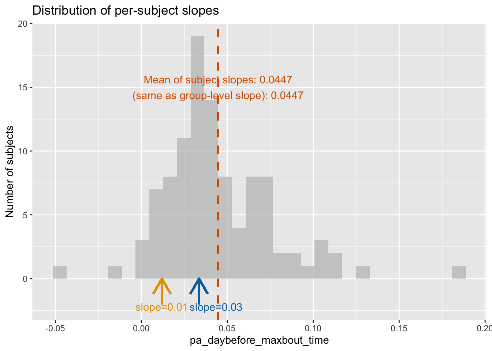
ggsave(paste0(PLOTS_DIR, '/', "model_c_slopedist", ".pdf"))Saving 7 x 5 in imageWarning in geom_segment(aes(x = model_c_subj_early_slope, y = -2, xend = model_c_subj_early_slope, : All aesthetics have length 1, but the data has 104 rows.
ℹ Please consider using `annotate()` or provide this layer with data containing
a single row.
All aesthetics have length 1, but the data has 104 rows.
ℹ Please consider using `annotate()` or provide this layer with data containing
a single row.`stat_bin()` using `bins = 30`. Pick better value `binwidth`.Note that when adding random effects (intercepts and slopes), you may see singular fits / boundary convergance warnings. These often occur because too many have been added, and the random effects structure needs to be simplified.
OK, what else can we do with LMERs?
Standardisation, and additional fixed effects (Model D)
In our original data table, we saw that we also have age and sex data for these subjects.
Often when performing analysis, we either want to also investigate the effects age and sex have on our response variable (hr_acrophase), or account/adjust for them so that we are observing the unique effects of our predictor of interest (pa_daybefore_maxbout_time). LMERs also allow us to easily to do both of these simultaneously by fitting multiple fixed effects (simply adding age and sex to the model formula). We get independent slope values for each fixed effect, which represent the relationship between that variable and the response (hr_acrophase) when the relationships between predictors have been removed.
But first, when we are fitting a model with multiple predictors, it is good practice to standardise them (subtract the mean, and adjust so they have a standard deviation of 1), to make it easier to directly compare their effects on the response variable.
# when you have multiple explanatory variables, good practice to standardise
# (mean of zero (“centering”) and standard deviation of one (“scaling”))
# so that it is easier to compare their effect sizes
for (col in c("age", "pa_daybefore_maxbout_time_trait", "pa_daybefore_maxbout_time_state", "pa_daybefore_maxbout_time")) {
df[col] = scale(df[col], center=TRUE, scale=TRUE)
}
# what does standardised variables look like
standardised_plot <- ggplot(df, aes(x=pa_daybefore_maxbout_time, y=hr_acrophase))+
geom_point(color="grey") + # scatter points
ggtitle("Standardised")
show(standardised_plot)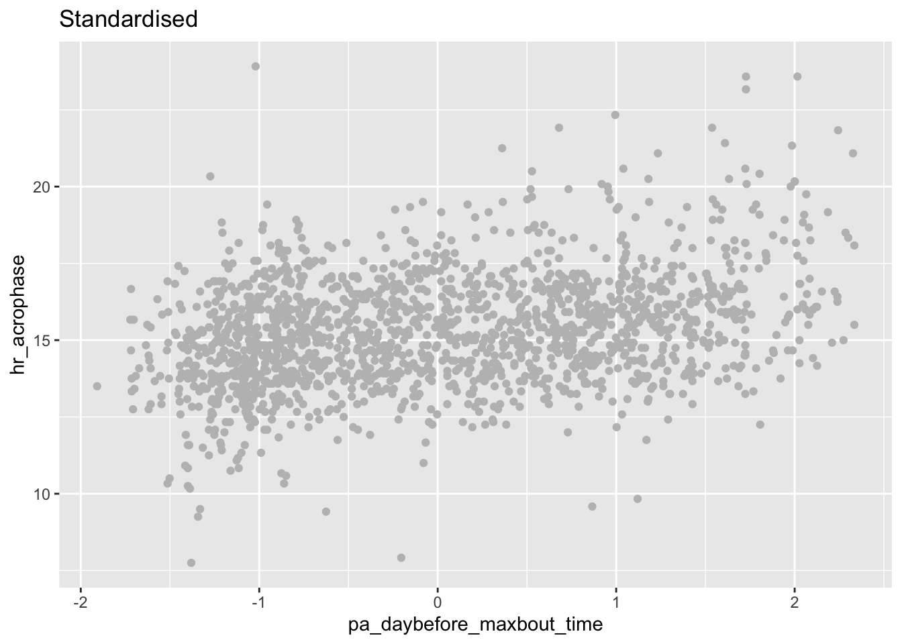
ggsave(paste0(PLOTS_DIR, '/', "standardised", ".pdf"))Saving 7 x 5 in imageNote that pa_daybefore_maxbout_time still has the same relationship with hr_acrophase, but its values have now been adjusted.
Let’s add the age and sex terms to our model.
model_d <- lmer(hr_acrophase ~ pa_daybefore_maxbout_time + age + sex + (1+pa_daybefore_maxbout_time|subject_id), data=df)summary(model_d)Linear mixed model fit by REML. t-tests use Satterthwaite's method [
lmerModLmerTest]
Formula:
hr_acrophase ~ pa_daybefore_maxbout_time + age + sex + (1 + pa_daybefore_maxbout_time |
subject_id)
Data: df
REML criterion at convergence: 5074.3
Scaled residuals:
Min 1Q Median 3Q Max
-4.4192 -0.5281 -0.0403 0.5099 4.3951
Random effects:
Groups Name Variance Std.Dev. Corr
subject_id (Intercept) 2.90192 1.7035
pa_daybefore_maxbout_time 0.04697 0.2167 0.20
Residual 0.91267 0.9553
Number of obs: 1685, groups: subject_id, 104
Fixed effects:
Estimate Std. Error df t value Pr(>|t|)
(Intercept) 15.18526 0.21882 92.53703 69.397 < 2e-16 ***
pa_daybefore_maxbout_time 0.19439 0.03523 65.14005 5.518 6.36e-07 ***
age -0.52775 0.17323 90.36095 -3.047 0.00303 **
sexMale 0.26456 0.35089 90.99179 0.754 0.45282
---
Signif. codes: 0 '***' 0.001 '**' 0.01 '*' 0.05 '.' 0.1 ' ' 1
Correlation of Fixed Effects:
(Intr) p_dy__ age
p_dybfr_mx_ 0.099
age 0.191 0.034
sexMale -0.618 -0.007 -0.118model_d_rsq <- r.squaredGLMM(model_d)[2]
print(paste0("Rsq: ", round(model_d_rsq, 5)))[1] "Rsq: 0.78366"We now have additional rows in our fixed effects table for both the age and sex effects. Crucially, we see age has a strong negative relationship (estimate -0.528) with hr_acrophase - as we get older, our heart rate acrophase advances.
Note that because we loaded the lmerTest library, estimated p-values are also displayed for each fixed effect. These tell us our estimates for pa_daybefore_maxbout_time and age are significant, however the estimate for sex is not. This doesn’t mean we shouldn’t include sex as an effect, however - in this case, we want to ensure we remove any sex effects, even if the effect is minimal.
Separating lifestyle predictors into ‘traits’ and ‘states’ (Model E)
So it looks like pa_daybefore_maxbout_time has an effect on hr_acrophase. However, as this is free-living data, it is likely that there is substantial differences in the nature of pa_daybefore_maxbout_time between subjects: people have different work schedules and exercise timing preferences. Under the ‘within-between’ framework, we split such variables into the per-subject mean (their typical most-physically-active time), and the daily deviations (how much earlier or later this is than usual on a given day) from that mean. Doing so allows us to separately measure how lifestyle affects between- and within-subject variability of hr_acrophase. Borrowing terminology from psychology, we call these per-subject means ‘traits’, and daily deviations ‘states’.
Earlier, we saw that we also have variables pa_daybefore_maxbout_time_trait and pa_daybefore_maxbout_time_state in this table. These are derived from pa_daybefore_maxbout_time, by taking the mean across the recording for a subject, and daily deviations from that mean respectively. If we added the trait and state variables back together, we would get our original pa_daybefore_maxbout_time.
Here’s what these variables look like compared to our previous pa_daybefore_maxbout_time.
# -- model e: introduce trait/state --
trait <- ggplot(df, aes(x=pa_daybefore_maxbout_time_trait, y=hr_acrophase))+
geom_point(color="grey") +
ggtitle("Trait (subject-level average)")
state <- ggplot(df, aes(x=pa_daybefore_maxbout_time_state, y=hr_acrophase))+
geom_point(color="grey") +
ggtitle("State (day-level deviation from average)")
trait_and_state <- standardised_plot + trait + state + plot_layout(design = "
11
23
")
show(trait_and_state)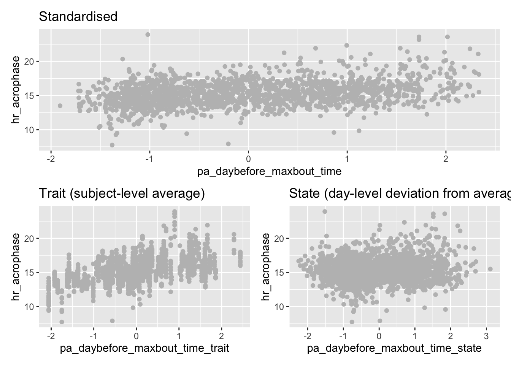
ggsave(paste0(PLOTS_DIR, '/', "trait_and_state", ".pdf"))Saving 7 x 5 in imageFinally, we will fit a model with the trait and state variables as separate predictors, allowing us to separate the between- and within-subject interactions of pa_daybefore_maxbout_time on hr_acrophase. These are alongside age and sex, and a random slope for pa_daybefore_maxbout_time_state will also be added (constant variables, such as pa_daybefore_maxbout_time_trait, can’t have a subject-level random slope)
model_e <- lmer(hr_acrophase ~ pa_daybefore_maxbout_time_trait + pa_daybefore_maxbout_time_state + age + sex + (1 + pa_daybefore_maxbout_time_state|subject_id), data=df)
summary(model_e)Linear mixed model fit by REML. t-tests use Satterthwaite's method [
lmerModLmerTest]
Formula:
hr_acrophase ~ pa_daybefore_maxbout_time_trait + pa_daybefore_maxbout_time_state +
age + sex + (1 + pa_daybefore_maxbout_time_state | subject_id)
Data: df
REML criterion at convergence: 5041.3
Scaled residuals:
Min 1Q Median 3Q Max
-4.4269 -0.5269 -0.0360 0.5162 4.3882
Random effects:
Groups Name Variance Std.Dev. Corr
subject_id (Intercept) 2.01607 1.4199
pa_daybefore_maxbout_time_state 0.03575 0.1891 0.28
Residual 0.91591 0.9570
Number of obs: 1685, groups: subject_id, 104
Fixed effects:
Estimate Std. Error df t value Pr(>|t|)
(Intercept) 15.20896 0.18298 89.08632 83.117 < 2e-16
pa_daybefore_maxbout_time_trait 1.04807 0.14843 87.12084 7.061 3.81e-10
pa_daybefore_maxbout_time_state 0.16702 0.03144 65.40085 5.312 1.40e-06
age -0.13603 0.15654 85.16613 -0.869 0.387
sexMale 0.14506 0.29234 85.68908 0.496 0.621
(Intercept) ***
pa_daybefore_maxbout_time_trait ***
pa_daybefore_maxbout_time_state ***
age
sexMale
---
Signif. codes: 0 '***' 0.001 '**' 0.01 '*' 0.05 '.' 0.1 ' ' 1
Correlation of Fixed Effects:
(Intr) p_dybfr_mxbt_tm_t p_dybfr_mxbt_tm_s age
p_dybfr_mxbt_tm_t -0.001
p_dybfr_mxbt_tm_s 0.134 0.000
age 0.174 0.392 0.014
sexMale -0.615 -0.050 -0.006 -0.126Wow - as the estimate for the _trait variable (1.05) is much greater than the _state variable (0.17), this tells us the delaying effect of pa_daybefore_maxbout_time on next-day hr_acrophase is primarily driven by habitually late activity. However, the smaller estimate of the state variable is also significant - regardless of habitual activity time, later activity time still delays next-day hr_acrophase, to a smaller extent.
Furthermore, adding the trait variable has reduced between-subject variance from 2.90 to 2.02. The effect of age has been attenuated, as the trait variable now captures between-subject variance previously explained by age.
A crucial point: circularity of data
When we first loaded in the data, we dropped rows where the maximum physical bout was below 5am, as a fix for data wrap-around.
In chronobiology, we often deal with circular data. For example, time of day: these values range from 0.00 to 23.99, where the value immediately after 23.99 is 0.00 - it ‘wraps-around’ at midnight.
Linear models do not work with circular data. As such, you must ensure that the relationship you are modelling is linear (visualisation helps), i.e no variables wrap-around. You could exclude variables as we have here, if this is reasonable for your analysis:
df <- read.csv("data.csv", header = TRUE, sep = ",")
df$after_5am <- df$pa_daybefore_maxbout_time >= 5
ggplot(df, aes(x=pa_daybefore_maxbout_time, y=hr_acrophase, color=after_5am))+
geom_point()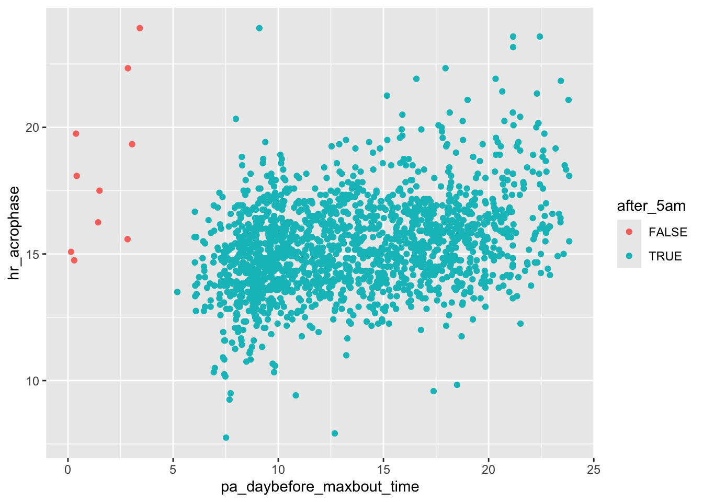
Alternatively, you could manipulate them in some way, for example we could add 24 hours to the values below 5am:
df <- read.csv("data.csv", header = TRUE, sep = ",")
df$after_5am <- df$pa_daybefore_maxbout_time >= 5
df[df$after_5am==FALSE,"pa_daybefore_maxbout_time"] <- df[df$after_5am==FALSE,"pa_daybefore_maxbout_time"] + 24
ggplot(df, aes(x=pa_daybefore_maxbout_time, y=hr_acrophase, color=after_5am))+
geom_point()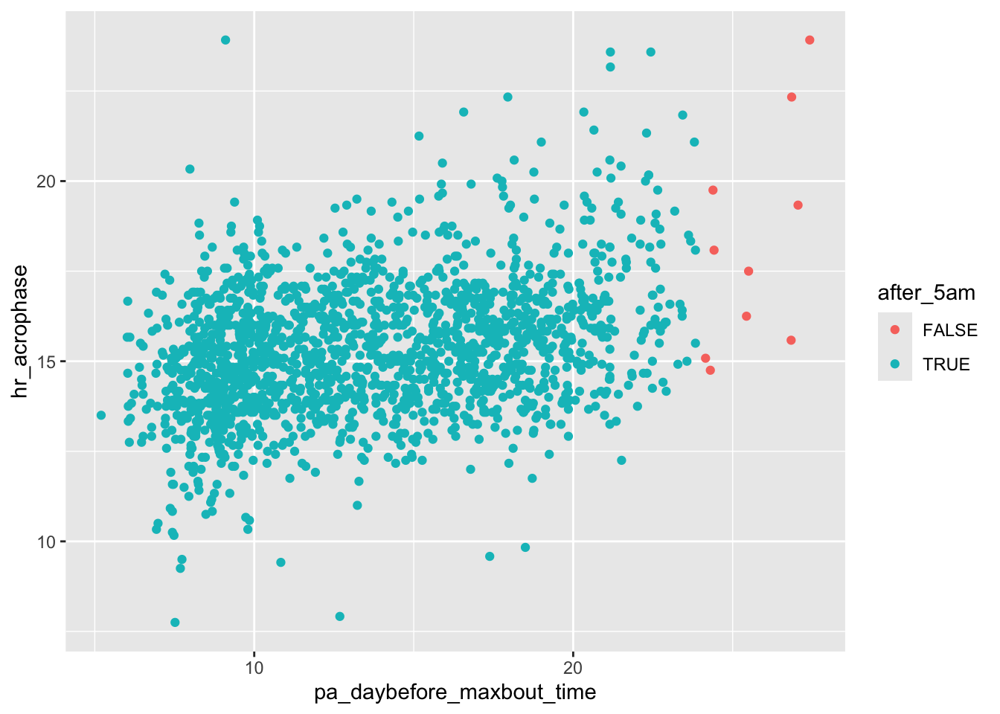
The trait and state separation method, based on circular mean, is another way to approach this problem.
However, depending on your data, it may not be possible to resolve these issues, in which case an LMER may not be suitable. In such cases, circular statistics or cosinor methods may work.
Conclusion
In this document, we applied LMERs to investigate a question in real chronobiological data. We introduced random slopes, as well as how to standardise variables, and account for demographic variables using LMERs. We also introduced the concept of ‘traits’ and ‘states’ to distinguish between- and within-subject effects of lifestyle on chronobiology.